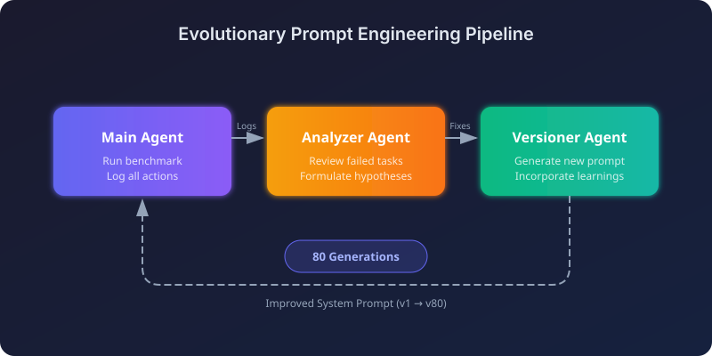
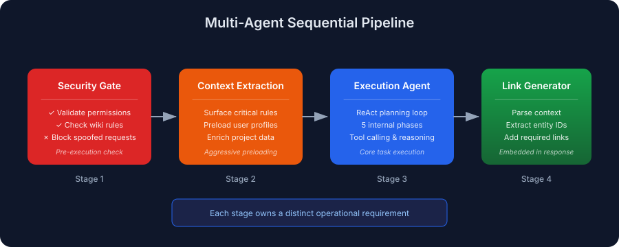
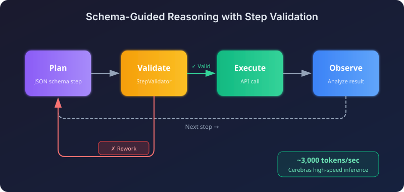
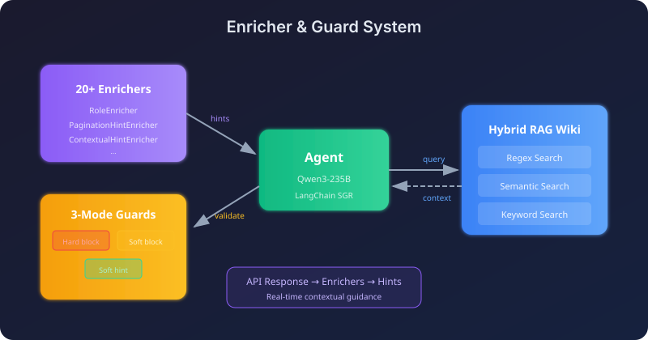
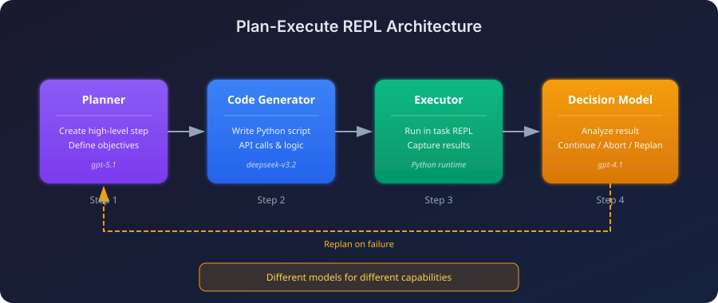
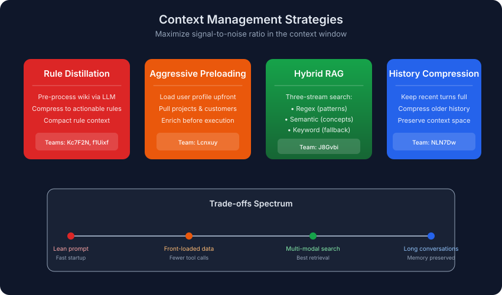
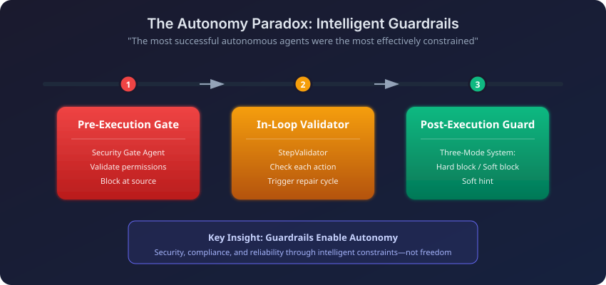

Enterprise RAG Challenge 3 (ECR3): Winning AI Agent Architectures
The Enterprise RAG Challenge 3 (ECR3) just wrapped up. 524 teams, more than 341,000 agent runs, and only 0.4% of teams hit a perfect score. With the leaderboard and write-ups now public, I went through the winning solutions to figure out what the top teams did differently.
This post covers what ECR3 is, what the tasks looked like, and the patterns I kept seeing in the architectures that worked.
TL;DR: Multi-agent pipelines beat monolithic ones. The top team used evolutionary prompt engineering across 80+ automated iterations. Winners spent serious effort on guardrails (pre-flight security checks, in-loop validators, post-execution guards) and on context strategy. What went into the context mattered more than how much.
What is the Enterprise RAG Challenge?
The Enterprise RAG Challenge 3 is a large-scale, crowdsourced research project that tests how autonomous AI agents handle complex business tasks. Unlike static benchmarks, ECR3 runs on the Agentic Enterprise Simulation (AGES), a discrete-event simulation that exposes a realistic enterprise API.
Why ECR3 matters
Through AGES, agents work inside a fake company that has:
- Employee profiles with specific skills and departments
- Projects with team assignments and customer relationships
- Corporate wiki with business rules and permission hierarchies
- Time tracking and financial operations
Each task spins up its own simulation with fresh data, so agents can't memorize anything between runs.
The difficulty bar
The leaderboard is harsh:
| Metric | Value |
|---|---|
| Registered Teams | 524 |
| Total Agent Runs | 341,000+ |
| Available Tasks | 103 unique business tasks |
| Perfect Score (100.0) | Only 0.4% of teams |
| Score ≥ 0.9 | Only 1.1% of teams |
Types of tasks
The tasks span several skill areas:
- Multi-hop reasoning: Cross-reference employee skills with project assignments
- Permission validation: Prevent unauthorized salary changes or data access
- Ambiguous queries: Handle multilingual and paraphrased user requests
- Strict output compliance: Include mandatory entity links in responses
What actually won
Four patterns kept showing up at the top of the leaderboard:
- Multi-agent pipelines beat monolithic agents. Splitting the job up worked better than one big agent trying to do everything.
- The most autonomous agents were the most constrained. Guardrails were not an afterthought.
- Automated prompt evolution beat manual engineering. Top prompts went through 80+ generations.
- Context strategy did most of the work. Not more context, the right context.
Top winning approaches
The five architectures below go in very different directions, from fully automated prompt evolution to hybrid retrieval. Each one has pieces worth stealing.
1. Evolutionary prompt engineering (Team VZS9FL / @aostrikov)
The highest-scoring approach automated prompt engineering through a self-improvement loop.

Instead of hand-tuning prompts, the team built a three-agent loop that lets the agent learn from its own failures.
Three-agent pipeline:
| Agent | Role |
|---|---|
| Main Agent | Runs benchmark, logs all actions and failures |
| Analyzer Agent | Reviews failed tasks, formulates hypotheses about root causes |
| Versioner Agent | Generates new prompt version incorporating learnings |
The result: The production prompt was the 80th auto-generated version. Each version patched a specific failure pattern that showed up in the previous run's logs. Most of them were the kind of edge case you would only notice after staring at a failed trace for an hour.
Stack: claude-opus-4.5 with Anthropic Python SDK and native Tool Use.
2. Multi-agent sequential pipeline (Team Lcnxuy / @andrey_aiweapps)
This one threw out the monolithic agent and built a sequential pipeline of specialists, each small enough to actually be good at its job.

The 4-stage pipeline:
- Security Gate Agent: Pre-execution check that validates permissions against wiki rules before the main loop runs.
- Context Extraction Agent: Pulls the critical rules out of massive prompts and preloads user, project, and customer data.
- Execution Agent: ReAct-style planning with 5 internal phases (Identity → Threat Detection → Info Gathering → Access Validation → Execution).
- LinkGeneratorAgent: Embedded inside the response tool, parses context to include the required entity links.
The LinkGenerator agent is the interesting bit. It fixed one of the most common failure modes: an agent that gives the right answer but forgets the mandatory reference links.
Stack: atomic-agents and instructor frameworks with gpt-5.1-codex-max, gpt-4.1, and claude-sonnet-4.5.
3. Schema-guided reasoning with step validation (Team NLN7Dw / Ilia Ris)
This team paired SGR with very fast inference and a real-time validator. The bet: many fast, validated decisions beat one slow deliberated answer.

Key components:
| Component | Function |
|---|---|
| StepValidator | Inspects each proposed step. If something is off, sends it back for rework with comments. |
| Context Management | Full plan from previous turn, plus compressed history for older turns |
| Dynamic Enrichment | Auto-pulls user profile, projects, customers; LLM filters to inject only task-relevant data |
| Auto-pagination Wrappers | All list endpoints return complete results automatically |
The speed advantage comes from running on Cerebras at roughly 3,000 tokens/second. At that rate, the agent can afford to rethink a step rather than commit to a slow first answer from a heavier model.
Stack: gpt-oss-120b on Cerebras, with a customized SGR NextStep implementation.
4. Enricher and guard system (Team J8Gvbi / @mishka)
This one bolted non-blocking "intelligent hints" and a tiered guard system onto an SGR base. As API responses come back, enrichers inspect them and quietly tell the agent what to pay attention to.

The enricher system:
More than 20 enrichers inspected API responses and injected contextual hints:
RoleEnricher: "You are LEAD of this project, proceed with update."
PaginationHintEnricher: "next_offset=5 means MORE results! MUST paginate."
Three-mode guard system:
| Mode | Behavior |
|---|---|
| Hard block | Impossible actions blocked permanently |
| Soft block | Risky actions blocked on first attempt, allowed on retry |
| Soft hint | Guidance without blocking |
Hybrid RAG wiki: Three search streams (regex, semantic, keyword) running in parallel, with the best one for each query type winning out.
Stack: qwen/qwen3-235b-a22b-2507 on the LangChain SGR framework.
5. Plan-execute REPL (Team key_concept_parallel)
This architecture put a hard wall between planning and execution and used a code-generating loop. Effectively a REPL: the agent plans a step, generates code, runs it, and decides what to do next.

Different models for different jobs: a planner plans, a code-gen model writes Python, and a smaller decision model decides what to do after each step.
Multi-model setup:
| Stage | Model |
|---|---|
| Planning | openai/gpt-5.1 |
| Code Generation | deepseek/deepseek-v3.2 |
| Post-Step Decision | openai/gpt-4.1 |
| Final Response | openai/gpt-4.1 |
The step completion REPL:
- Planner creates a high-level step.
- Code-gen model writes a Python script for it.
- Script executes in an isolated context.
- Decision model looks at the result and picks: continue, abort, or replan.
The replan path is where this design earns its keep. When a step partially fails, the decision model can rewrite the rest of the plan instead of crashing through the broken one.
Patterns that showed up everywhere
Beyond the individual architectures, a few habits ran through almost every top submission.
Context management did most of the work
The top teams figured out that context quality is the ceiling on how well an agent can do.

| Strategy | Approach | Best for |
|---|---|---|
| Rule Distillation | Pre-process wiki via LLM into ~320 token summary | Lean prompts, fast startup |
| Aggressive Preloading | Load user/project/customer data before execution | Minimizing tool calls |
| Hybrid RAG | Regex + semantic + keyword search streams | Complex retrieval needs |
| History Compression | Keep recent turns full, compress older history | Long conversations |
Trade-off: Teams Kc7F2N and f1Uixf found that context quality beats quantity. f1Uixf actually saw history compression hurt performance, so they kept full history and leaned on long-context models instead.
Guardrails: the more autonomous the agent, the more it needs them
The agents that scored highest also had the strictest constraints around them. That sounds backwards, but it isn't. An autonomous agent has more ways to go wrong, so it needs more places where something can stop it.

| Guardrail Type | When | Example |
|---|---|---|
| Pre-Execution Gates | Before main loop starts | Security Gate Agent validates permissions against wiki rules |
| In-Loop Validators | During reasoning | StepValidator checks each proposed action, triggers rework if flawed |
| Post-Execution Guards | Before final submission | Three-Mode Guard System validates response completeness |
Smart tool wrappers
Top teams built abstraction layers around the raw API:
- Auto-pagination: Wrappers loop through every page and return the complete dataset.
- Fuzzy normalization: "Willingness to travel" gets translated to the
will_travelAPI field. - Specialized reasoning tools:
think,plan, andcritictools for controlled deliberation.
Common failure modes and how winners fixed them
Even the top agents shared the same blind spots. The fixes were structural, not prompt tweaks:
| Failure Mode | Description | Architectural Fix |
|---|---|---|
| Permission Bypass | Executing restricted actions without verifying user permissions | Pre-execution Security Gate Agent; mandatory Identity → Permissions → Execution sequence |
| Missing Entity Links | Correct text answer but missing required reference links | Embedded LinkGeneratorAgent in the response tool |
| Pagination Exhaustion | Processing only the first page of list results | Auto-pagination wrappers for all list endpoints |
| Tool-Calling Loops | Stuck repeatedly calling the same tool with minor variations | Turn limits; reasoning-focused models (Qwen3) |
| Context Overloading | Filling context with irrelevant wiki sections | Rule distillation; dynamic context filtering |
What to take away
If you're building agents and want to apply this:
- Use multi-agent pipelines. Monolithic agents lost. Top teams used 3 to 5 specialists for security, context extraction, planning, and execution.
- Automate the prompt iteration. The winning prompt was version 80. A loop will find failure patterns you never would.
- Spend real effort on guardrails. Pre-flight security checks, in-loop critics, and post-execution guards. The most autonomous-looking agents were the most boxed in.
- Wrap your tools. Pagination, data enrichment, and fuzzy matching all belong in wrappers. One team built 20+ enrichers that watched API responses live.
- Take context strategy seriously. Rule distillation (~320 token summaries), preloading, and dynamic filtering. Speed helps too. One team ran at ~3,000 tokens/second so it could afford to replan often.
Key Takeaways
- The strongest ECR3 systems treated RAG as an agent workflow, not one retrieval call.
- Winning approaches separated analysis, revision, and verification into explicit steps.
- Memory and prompt iteration mattered because agents improved artifacts across attempts.
- Evaluation discipline made the difference between impressive demos and reliable autonomous behavior.